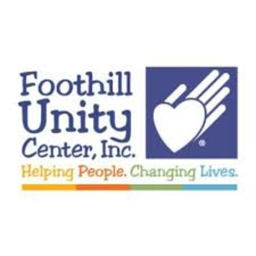

Jerry Lu
As a student athlete, football took a major toll on my health but created the leader and gentleman I am today. Most importantly, football required commitment and responsibility which are elements that also translates to my academics and work ethic in class. During my junior year I suffered from an agonizing season ending injury by tearing my MCL located in the knee. After my injury, I spent countless hours performing repetitive and rigorous exercises in the therapy clinic where I suffered mentally and physically. Yet, my knee was immobile at first but after long months of grueling conditioning around the knee, I was able to regain my regular motion. I was amazed on how my therapy almost revamped me! As a result, I developed a strong passion within the physical therapy field.
Currently, I am volunteering at a physical therapy clinic which allows me to interact and help patients through a set exercise list constructed to benefit their body and injury. Watching them occasionally struggle, quit and react in pain makes me sympathize with their feelings and hardship. With encouragement and motivation, I would remind the patients that they will recover through repetition and time. My desire to help patients heal from injury motivates me to spend hours researching alternative pain-relieving methods and exercises then referring them to the therapists. I intend to intern at specialized clinics -- sports, outpatient, and hospital therapy -- in order to obtain more hands-on experience and thorough understanding of the various work environments.
I believe my obligation to become a compelling leader and ambition to help others motivates me to work harder in order to pursue my dream career in physical therapy within the University of California. In addition, I will be committing in the Air Force ROTC program that not only educates me within my desired major, but also strengthen my leadership skills through field training, leadership exercises and management techniques. I trust that I will be an improved student by demonstrating leadership and management skills in my class and school ; but also, a positive influence to underclassmen and my peers.
Physical therapy defined my life ever since highschool football. Weekly injuries were almost inevitable from sprained ankles to dislocated shoulders; therefore, periodic visits in the clinic revolved around my schedule. After years of conditioning and strengthening my body, I soon fell in love with physical therapy and the idea of helping others recover from painful injuries as I have endured the same suffering.
I have prepared for my intended major by volunteering at physical therapy clinics such as my highschool sports clinic and San Gabriel Physical Therapy where I learned numerous exercises, stretches, and training techniques that strengthen the muscles in the body. By shadowing the therapist, I received personal insight of future classes I intend to take such as human anatomy and recommendations that I should experience with more ‘hands on’ clinical work. In addition, I enrolled in free online courses on courses and realized that physical therapy is not just about targeting one segment of the body; but, actually working to establish a hearty body and maintain a nourishing lifestyle.
University of California, Riverside offers many diverse classes one could choose from for my major of Biology; however, it does not have my intended major of physical therapy.
By taking general courses such as chemistry and biology, I acquired a basic understanding of some of the upper-division courses I look forward to this coming year. By attending study discussions and peer tutoring, difficult material became understandable. Although the courses required rigorous and conceptual studying, I was able to succeed in the classes with additional aid from my professors and teacher aids. In addition, I had a successful first year with laboratory studies which gave me a greater understanding through hands on learning from experiments. Most importantly, I believe that I have worked to improve time management skills because upper-division courses will require more time to comprehend the material by previewing the lesson ahead of time and reviewing the notes after lectures. Overall, I believe that I am ready for my future career in the physical therapy field and strive to work harder in my upper division Biology courses.
Experience
Physical Therapy
• Assisted in athlete rehabilitation
• Taped athletes before games
• Learned exercises and stretches for injuries
Volunteer
• Annual thanksgiving service
• Packaged, wrapped, and shipped food to the needy
Club VP
• Taught students how to play go
• Organized tournaments
• 2nd place in AGA club tournament
• Helped cofound the club
Education
University of California Riverside
Portfolio
